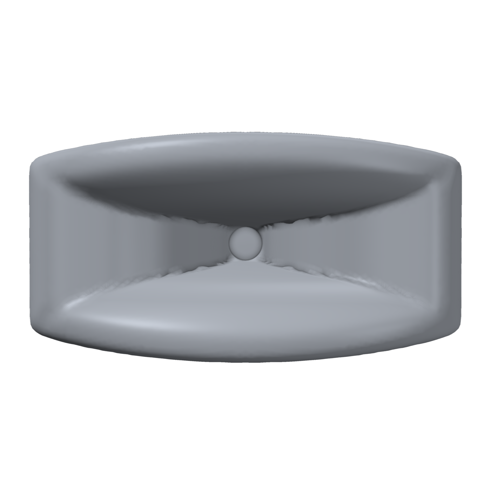
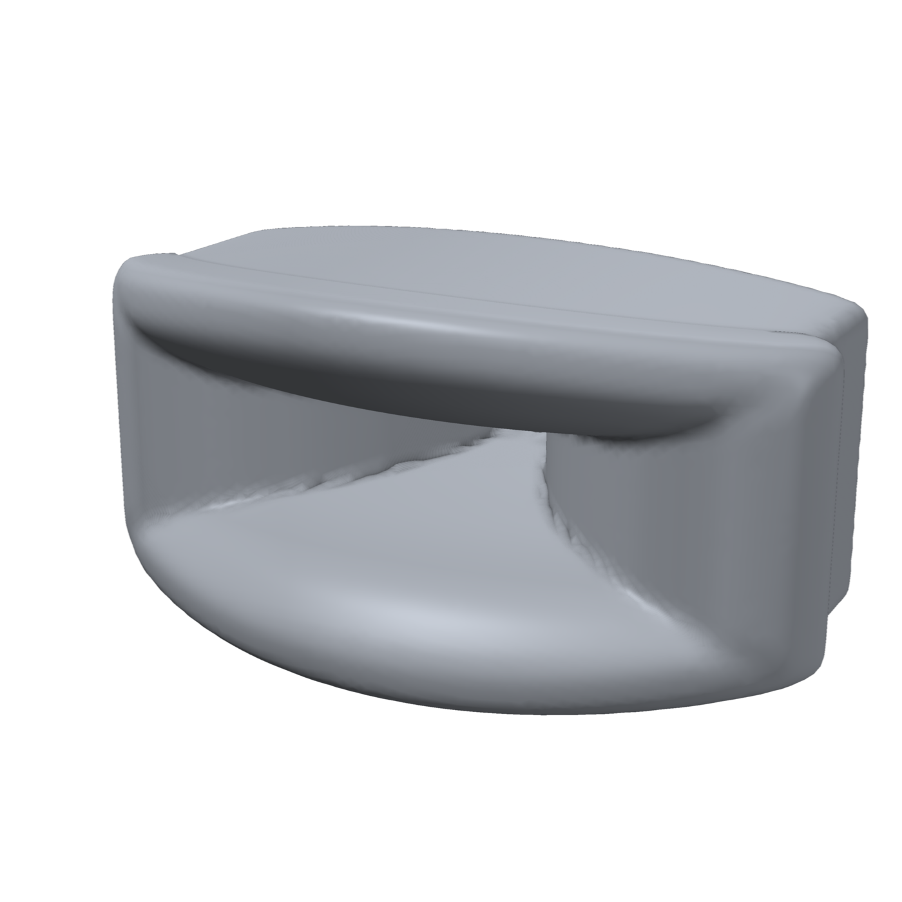
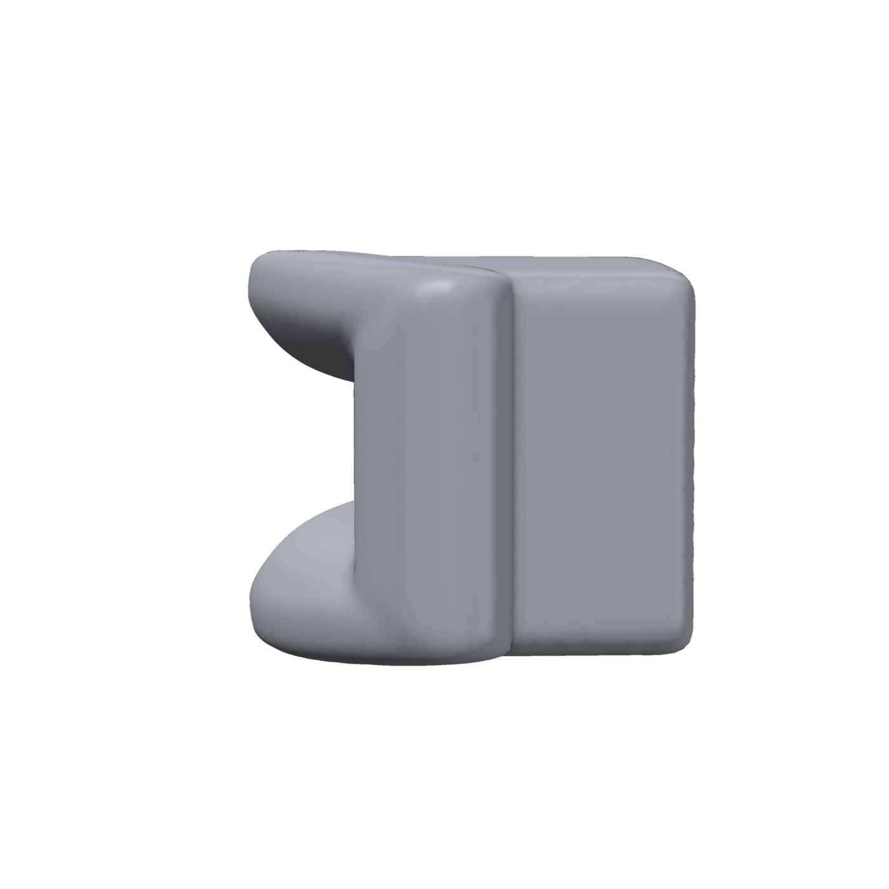

All four searches finished with 32/32 valid evaluations. Top-1 higher-resolution verification succeeded for every arm. These are objective-v7 scores on the same 700 Hz, 80 H x 50 V brief; lower is better. The smaller section-based study is a separate geometry experiment, not an equal-size pucker comparison.
| Study | Valid / attempts | Seed J | Best screen J | Best at n | Verify J | Verify DOFs |
|---|---|---|---|---|---|---|
| Original reference | 32/32 | 30.362 | 29.423 | 31 | 31.796 | 4,134 |
| Moderate H/V pucker | 32/32 | 29.447 | 28.434 | 29 | 30.813 | 4,122 |
| Strong H/V pucker | 32/32 | 28.503 | 27.407 | 25 | 29.839 | 3,894 |
| Section-based ES-600 study | 32/32 | 23.086 | 22.756 | 29 | 24.299 | 3,084 |
Verification changes the winning scores by roughly 5-9 percent. A successful solve is not proof of acoustic mesh convergence or target coverage. The section study first improved at n=4 and won at n=29, consistent with its stated first-generation improvement hypothesis.
Design 7e454d58122c: depth 204.703 mm, H depth scale 1.02979, crown 17.765 mm. These renders use its saved screening mesh. The seed gallery remains unchanged so the reference construction stays reviewable.


